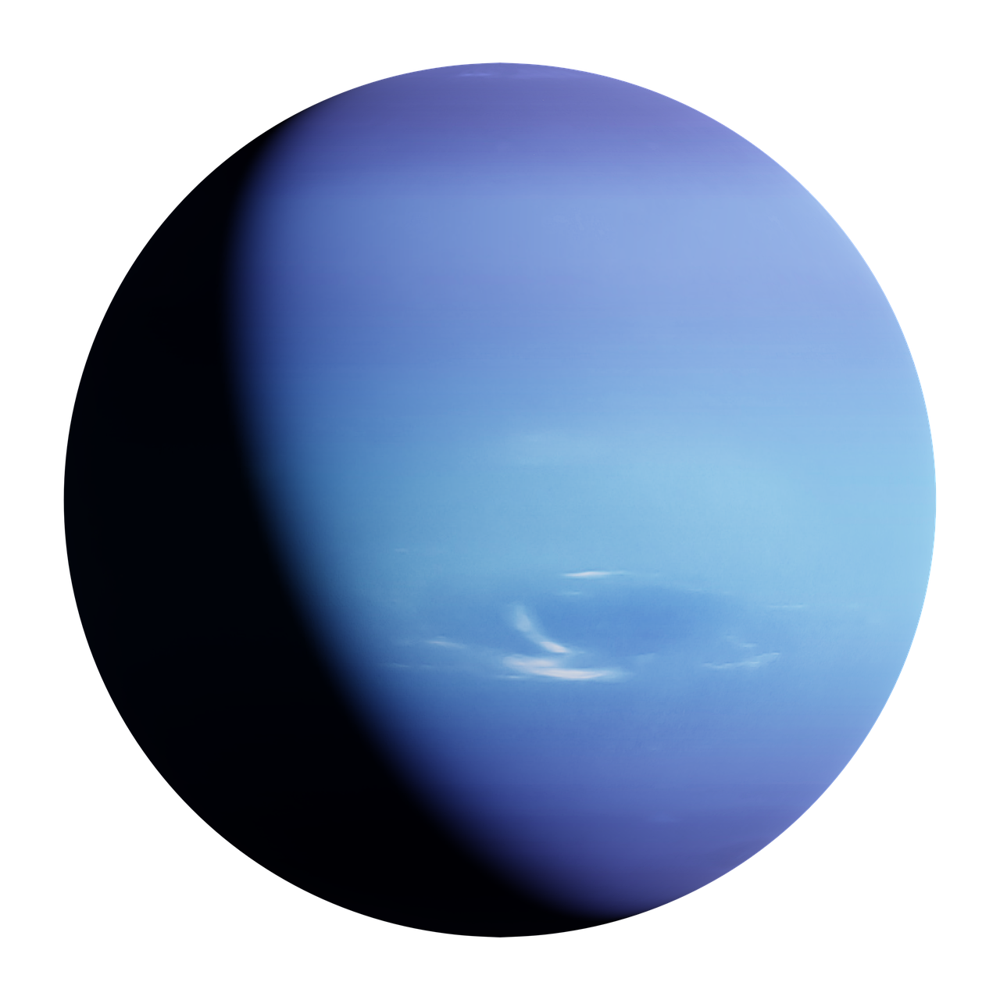

Sobre o Netuno
Netuno – O Guardião Azul
Netuno é o planeta mais distante do Sol e o último do Sistema Solar oficial. É conhecido por sua intensa cor azul e por ter os ventos mais fortes registrados, chegando a 2.100 km/h. Assim como Urano, é um gigante de gelo, composto de hidrogênio, hélio e metano. Sua lua Tritão é igualmente intrigante, pois possui atividade geológica e pode guardar segredos sobre os confins do Sistema Solar.
Curiosudades
- Ventos violentos: Netuno tem os ventos mais rápidos do Sistema Solar, alcançando até 2.100 km/h.
-
Azul profundo:
Sua cor intensa não é só pelo metano,
mas também por partículas ainda não totalmente identificadas. -
Tritão intrigante:
Sua lua principal orbita em sentido contrário ao planeta,
sugerindo que pode ter sido capturada e não formada junto com Netuno.